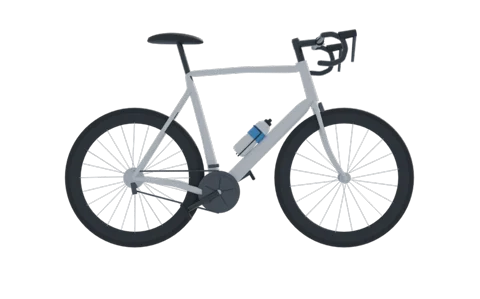

Ride real roads through real-world 3D scenery.
Rider & kitYour weight and power for real speeds; your colours on the road
Jersey
Kit
Rider
Bike

CoachYour fitness, form and what to ride next, from your RideWorld rides
Loading your rides…
Fitness and fatigue training load, last 90 days
Form fitness minus fatigue: above 0 fresh, below building
Power curve your best average power for each length of effort
Power profile watts per kilo against Coggan's table
Time in zones last 28 days
Weekly load TSS per week
Recent rides
How these are worked out
TSS (training stress) = hours × IF² × 100, where IF = Normalized Power ÷ the FTP you rode at (Coggan). Rides without power use heart rate. Fitness and fatigue are your daily TSS averaged over 42 and 7 days (Banister, as TrainingPeaks' chart); form is one minus the other. FTP estimate: 95% of your best 20 minutes, or your best hour. Critical power and W′: fitted to your 3–20 minute bests (Monod & Scherrer); W′ balance in a ride follows Skiba's model. VO2max, from the best source available: your watch's figure if you enter it; else a ramp test's best minute; else your heart rate against power (steady minutes from your rides, the line carried on to your max heart rate, as watches do it); both through Hawley & Noakes' equation. Only failing those, the ACSM equation at your best 5 minutes, which reads low unless they were all-out. Your max heart rate matters a lot here: set it under Rider if you know it (else the coach uses the higher of what your rides reached and 208 − 0.7 × age). Power at a heart rate: from the same line, now against the 4 weeks before. Heart-rate recovery: beats lost in the minute after a hard effort. Fitness age: the age whose average VO2max matches yours, from the HUNT fitness study (Loe et al. 2013). Decoupling: how far power per heartbeat fell in the second half (Friel; under 5% is a good aerobic base). Only rides on RideWorld count, so fitness starts low until a few weeks are in. Rides with impossible power (simulator tests) are left out by themselves; leave out any other with ×.
On screenWhat shows over the ride. Kept for this device, so your phone and your PC can differ
SensorsTrainer, power, heart rate and cadence, over ANT+ or Bluetooth
No trainer to hand? Simulator beside Go ride at the bottom rides with W / S (or ↑ / ↓) setting your power.
Which devices, browsers, trainers and sensors work, and why: What you need to ride.
Use either, or mix them: e.g. the trainer on ANT+ and the strap on Bluetooth. A Bluetooth trainer can only take resistance control from one app at a time, so close Zwift first.
Garmin or other watch for heart rate? Turn on its Broadcast heart rate, then Add a Bluetooth device and pick the watch. If it isn't in the list, it's still connected to another app (Zwift, the Garmin app): close that first, or use the ANT+ stick: Garmin watches broadcast on ANT+ too.
Once the trainer shows ✓, pedal and move this to feel a slope. It goes back to the route's gradient when you ride.
RoutePick a ride, plan your own on the map, or bring a file
A GPX, TCX, FIT or KML route from Strava, Komoot, RideWithGPS, Garmin or Google Earth. Routes with elevation give you real gradients.
WorkoutStructured intervals, with ERG holding your target power
Targets are a share of your FTP (rider settings). The workout runs on ride time, so it waits when you pause. Your speed still comes from your power, so in ERG the scenery goes by at the pace you're making.
Sound & musicRide sounds, and your own soundtrack from YouTube
Ride sounds play quietly under the music: your chain and tyres, gravel and cobbles, the freewheel ticking, wind, and a whoosh when someone passes. 🔊 in the ride turns them off and on.
Music
Find a playlist or song on YouTube Music or YouTube (opens a new tab), choose Share → Copy link, come back and press Paste. It plays beside the heart-rate dial; M plays / pauses, N skips.
Music that won't play?
Playlists must be public or unlisted ("Liked music" and other private lists won't play), and a few songs whose owners block other sites get skipped. With YouTube Premium, signed in to Google in this browser, there shouldn't be ads. Spotify, Apple Music or the YouTube Music app instead? Play it as usual: your keyboard's media keys and Chrome's media button still work while you ride.
Pacers & ghostsSomeone to chase: steady pacers, your past rides, segment times
A pacer rides at its power on the flat, 20% easier downhill and 10% harder uphill, with your weight and position. It sets off when you start and waits when you pause. Only you see your pacers.
Segments on this route
Ghosts on this route
Pick a route to see your ghosts.
Every ride you finish on a saved route becomes a ghost: a see-through rider replaying it against your time (it pauses when you do). Tick the ones to ride against; your best is ticked to start with. Simulator rides are kept too but never count as your best.
Ride with othersDrop in on anyone riding, or start a group ride for friends
Group rides
Start a group ride
Uses the RideWorld route selected in Routes. Friends join from this list; you start everyone together.
My ridesEvery ride you've finished: files, photos and sharing
🎬 Ride clips recorded with V or the phone remote: play here, or save the MP4
StravaSend every ride straight to Strava
Strava doesn't let other apps add photos to an activity, so RideWorld can't send them. They're kept with the ride (📸 in My rides, where you can download them all, and its share page): add them on Strava yourself (the activity → Add photos).